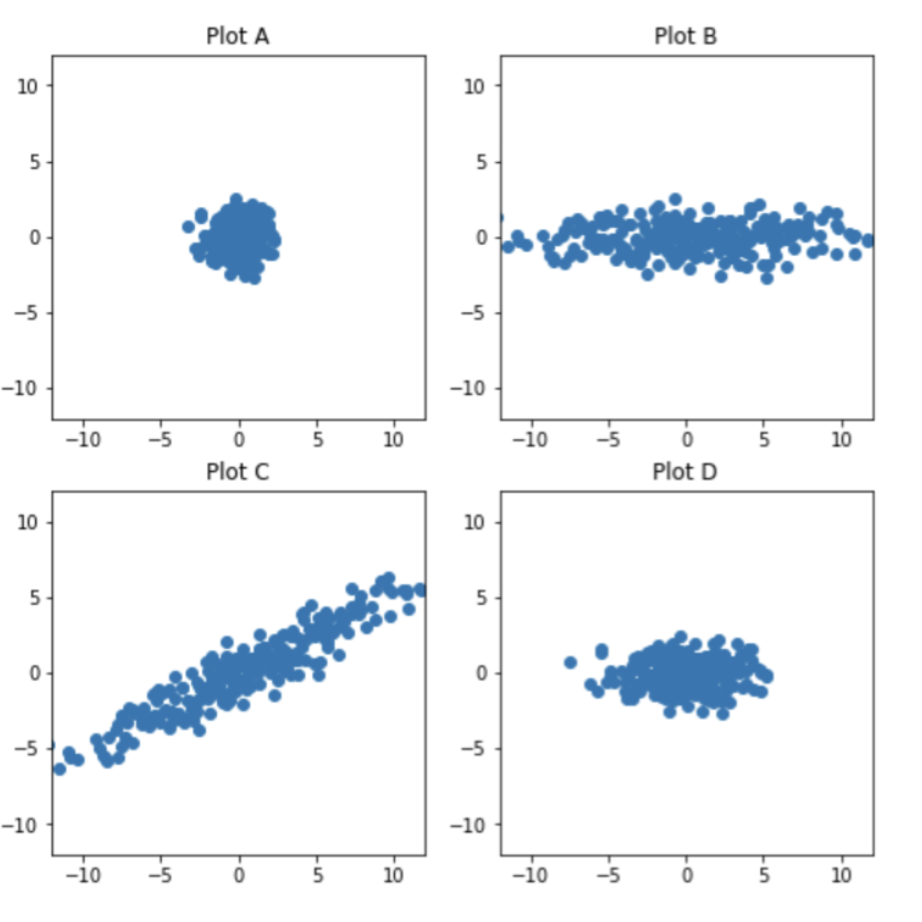

Post-Midterm 2 Practice Problems
This page contains several practice problems for content introduced after Midterm 2. They are sorted by topic:
- Problems 1-3 are on Convexity.
- Problems 4-17 are on Eigenvalues and Eigenvectors.
- Problems 18-21 are on the Singular Value Decomposition.
- Problems 22-25 are on Principal Components Analysis.
The problems range in difficulty, and aren’t necessarily indicative of the difficulty or styles of problems you will see on the real exam; some problems are more open-ended than we’d ask on an exam, and are designed to encourage you to review parts of the course notes.
As we’re able to, we will embed videos to certain problems here. A few have already been embedded below.
Convexity
Problem 1
Let \(f: \mathbb{R} \to \mathbb{R}\) be convex, and suppose \(f(0)=0\).
Prove that for all non-negative values of \(x\) and \(y\),
\[f(x)+f(y) \leq f(x+y)\]Hints:
- First, handle the easy case, \(x+y=0\).
If \(x+y>0\), define \(t=\frac{x}{x+y}.\) Why must \(t\in[0,1]\)?
Rewrite \(x\) as \(x=t(x+y)\) using the definition of \(t\) above. Then, use the fact from Lab 10 that for a convex function with \(f(0)=0\),
\[f(tu)\leq t\,f(u)\qquad\text{for }t\in[0,1]\]Do the same for \(y\) by writing \(y=(1-t)(x+y)\).
- Add the two inequalities you get.
Solution
If \(x+y=0\), then since \(x,y\ge 0\), we must have \(x=y=0\). So
\[f(x+y)=f(0)=0=f(0)+f(0)=f(x)+f(y)\]Now assume \(x+y>0\), and let
\[t=\frac{x}{x+y}\]Because \(x\) and \(y\) are both non-negative and \(x + y > 0\), it must be that \(x + y \geq x\), so \(0 \leq \frac{x}{x+y} \leq 1\).
Also, as the hint suggestions, we can write
\[x=t(x+y)\]Since \(f\) is convex and \(f(0)=0\), we know that for any \(u\in\mathbb{R}\) and any \(t\in[0,1]\),
\[f(tu)\le t\,f(u)\]Applying this with \(u=x+y\), we get
\[f(x)=f(t(x+y))\le t\,f(x+y)\]Also,
\[y=(1-t)(x+y)\]and \(1-t\in[0,1]\), so similarly,
\[f(y)=f((1-t)(x+y))\le (1-t)\,f(x+y)\]Adding these inequalities gives
\[f(x)+f(y)\le t\,f(x+y)+(1-t)\,f(x+y)=f(x+y)\]Therefore,
\[f(x) + f(y) \leq f(x+y)\]as needed!
One way this is phrased is that \(f\) is superadditive on the nonnegative reals, as long as it is convex and \(f(0)=0\). “Super” means “greater than” in this context. (If \(f\) were a linear transformation, it would just be additive: \(f(x+y) = f(x) + f(y)\).)
Problem 2
Suppose \(f: \mathbb{R} \to \mathbb{R}\) is a convex function.
- Find scalars \(a\) and \(b\) such that \(f(3) \leq a f(2) + b f(6)\).
- Using the result from part 1, prove that \(f(3) + f(5) \leq f(2) + f(6)\).
Solution
Part 1
Recall the definition of convexity:
\[f((1-t)x + ty) \leq (1-t)f(x) + tf(y)\]We want to write \(3\) as a convex combination of \(2\) and \(6\):
\[3 = (1-t)\cdot 2 + t \cdot 6 = 2 + 4t\]So \(t = \frac{1}{4}\), meaning
\[a = 1-t = \frac{3}{4}, \qquad b = t = \frac{1}{4}\]Thus,
\[\boxed{f(3) \leq \frac{3}{4}f(2) + \frac{1}{4}f(6)}\]Part 2
Now write \(5\) as a convex combination of \(2\) and \(6\):
\[5 = (1-t)\cdot 2 + t \cdot 6 = 2 + 4t\]So here \(t = \frac{3}{4}\), which gives
\[f(5) \leq \frac{1}{4}f(2) + \frac{3}{4}f(6)\]Adding this to the inequality from Part 1,
\[f(3) + f(5) \leq \left(\frac{3}{4} + \frac{1}{4}\right)f(2) + \left(\frac{1}{4} + \frac{3}{4}\right)f(6) = f(2) + f(6)\]Therefore,
\[\boxed{f(3) + f(5) \leq f(2) + f(6)}\]Problem 3
As we’ve seen several times, the variance of a dataset \(x_1, x_2, ..., x_n\) is defined by
\[\sigma_x^2 = \frac{1}{n}\sum_{i=1}^n (x_i - \bar{x})^2\]where \(\bar{x} = \text{Mean}(x_1, x_2, ..., x_n)\). By expanding the summation, we find that
\[\sigma_x^2 = \frac{1}{n}\sum_{i=1}^n x_i^2 - \bar{x}^2\]Another way of writing this is
\[\sigma_x^2 = \text{Mean}(x_1^2, ..., x_n^2) - (\text{Mean}(x_1, ..., x_n))^2\]Since \(\sigma_x^2 \geq 0\), this implies
\[\text{Mean}(x_1^2, ..., x_n^2) \geq (\text{Mean}(x_1, ..., x_n))^2\]The inequality above can be expressed more generally as
\[\boxed{\text{Mean}(g(x_1), g(x_2), ..., g(x_n)) \ge g(\text{Mean}(x_1, ..., x_n))}\]This is known as Jensen’s inequality, and it is true for all convex functions \(g(x)\).
- Using the second derivative test, prove that \(g(x) = -\log(x)\) is convex on \((0, \infty)\).
Suppose \(x_1, x_2, ..., x_n\) are all positive. Using Jensen’s inequality with \(g(x) = -\log(x)\), prove the AM-GM inequality:
\[\frac{x_1 + x_2 + ... + x_n}{n} \geq (x_1 \cdot x_2 \cdot ... \cdot x_n)^{1/n}\]Suppose \(x_1, x_2, ..., x_n\) are all positive. Using Jensen’s inequality with some convex function \(g(x)\), prove the AM-HM inequality:
\[\frac{x_1 + x_2 + ... + x_n}{n} \geq \frac{n}{\frac{1}{x_1} + \frac{1}{x_2} + ... + \frac{1}{x_n}}\]
Solution
Part 1
We compute derivatives of \(g(x) = -\log(x)\):
\[g'(x) = -\frac{1}{x}, \qquad g''(x) = \frac{1}{x^2}\]For all \(x > 0\), we have \(g''(x) \ge 0\). So \(g\) is convex on \((0, \infty)\).
Part 2
Apply Jensen’s inequality to \(g(x) = -\log(x)\):
\[\frac{-\log(x_1) - \cdots - \log(x_n)}{n} \ge -\log\left(\frac{x_1 + \cdots + x_n}{n}\right)\]Multiply by \(-1\), which flips the inequality:
\[\frac{\log(x_1) + \cdots + \log(x_n)}{n} \le \log\left(\frac{x_1 + \cdots + x_n}{n}\right)\]Use log rules:
\[\log\left((x_1x_2\cdots x_n)^{1/n}\right) \le \log\left(\frac{x_1 + \cdots + x_n}{n}\right)\]Exponentiating both sides gives
\[e^{\log\left((x_1x_2\cdots x_n)^{1/n}\right)} \le e^{\log\left(\frac{x_1 + \cdots + x_n}{n}\right)}\]so
\[(x_1x_2\cdots x_n)^{1/n} \le \frac{x_1 + x_2 + \cdots + x_n}{n}\] \[\boxed{\frac{x_1 + x_2 + \cdots + x_n}{n} \ge (x_1x_2\cdots x_n)^{1/n}}\]Lots of logarithm rules were used above. Make sure you understand the rule used at each step.
Part 3
Choose \(g(x) = \frac{1}{x}\), which is convex on \((0, \infty)\) because
\[g'(x) = -\frac{1}{x^2}, \qquad g''(x) = \frac{2}{x^3} > 0 \quad \text{for all } x > 0\]Apply Jensen’s inequality:
\[\frac{1}{n}\left(\frac{1}{x_1} + \frac{1}{x_2} + \cdots + \frac{1}{x_n}\right) \ge \frac{1}{\frac{x_1 + x_2 + \cdots + x_n}{n}}\]Multiply both sides by \(\text{Mean}(x_1, ..., x_n) = \frac{x_1 + \cdots + x_n}{n}\):
\[\text{Mean}(x_1, ..., x_n)\cdot \frac{1}{n}\left(\frac{1}{x_1} + \frac{1}{x_2} + \cdots + \frac{1}{x_n}\right) \ge 1\]So,
\[\text{Mean}(x_1, ..., x_n) \ge \frac{1}{\frac{1}{n}\left(\frac{1}{x_1} + \frac{1}{x_2} + \cdots + \frac{1}{x_n}\right)}\]and simplifying the right-hand side gives
\[\text{Mean}(x_1, ..., x_n) \ge \frac{n}{\frac{1}{x_1} + \frac{1}{x_2} + \cdots + \frac{1}{x_n}}\]So,
\[\boxed{\frac{x_1 + x_2 + \cdots + x_n}{n} \ge \frac{n}{\frac{1}{x_1} + \frac{1}{x_2} + \cdots + \frac{1}{x_n}}}\]Eigenvalues and Eigenvectors
Problem 4
Let
\[A = \begin{bmatrix} 3 & -1 & 1 \\ 0 & 5 & 4 \\ 0 & 0 & 5 \end{bmatrix}\]Find the eigenvalues and eigenvectors of \(A\). If \(A\) is diagonalizable, write it in the form \(A = V \Lambda V^{-1}\), and if it is not, explain why not.
Solution
Since \(A\) is upper triangular, its eigenvalues are the entries on its diagonal: \(3\), \(5\), and \(5\).
For \(\lambda = 3\),
\[A - 3I = \begin{bmatrix} 0 & -1 & 1 \\ 0 & 2 & 4 \\ 0 & 0 & 2 \end{bmatrix}\]We’re looking for vectors in the null space of \(A - 3I\). \(\text{rank}(A - 3I) = 2\), so \(\text{dim}(\text{nullsp}(A - 3I)) = 1\); since \(A - 3I\)’s first column is \(\vec 0\), the null space is spanned by \(\begin{bmatrix} 1 \\ 0 \\ 0 \end{bmatrix}\).
\[\text{nullsp}(A - 3I) = \text{span}\left(\left\{ \begin{bmatrix} 1 \\ 0 \\ 0 \end{bmatrix} \right\} \right)\]For \(\lambda = 5\),
\[A - 5I = \begin{bmatrix} -2 & -1 & 1 \\ 0 & 0 & 4 \\ 0 & 0 & 0 \end{bmatrix}\]Again, \(\text{rank}(A - 5I) = 2\), so \(\text{dim}(\text{nullsp}(A - 5I)) = 1\). Since \(A\)’s first column is double its second column, \(\text{nullsp}(A - 5I)\) is spanned by \(\begin{bmatrix} 1 \\ -2 \\ 0 \end{bmatrix}\).
\[\text{nullsp}(A - 5I) = \text{span}\left(\left\{ \begin{bmatrix} 1 \\ -2 \\ 0 \end{bmatrix} \right\}\right)\]The eigenvalue \(5\) has algebraic multiplicity 2 but geometric multiplicity 1, so \(A\) is not diagonalizable.
Problem 5
Suppose \(A\) is a \(3 \times 3\) matrix such that the eigenspace for \(\lambda = 1\) is the line spanned by \(\begin{bmatrix} 1 \\ 2 \\ 2 \end{bmatrix}\), and the eigenspace for \(\lambda = -5\) is the plane \(2x - 3y + 4z = 0\).
- Why is \(A\) diagonalizable?
- Find matrices \(V\) and \(\Lambda\) such that \(A = V \Lambda V^{-1}\).
Solution
The eigenspace for \(\lambda = 1\) is 1-dimensional, and the eigenspace for \(\lambda = -5\) is a plane, so it is 2-dimensional. That gives us 3 linearly independent eigenvectors in \(\mathbb{R}^3\), which is exactly what we need for diagonalizability.
One eigenvector for \(\lambda = 1\) is
\[\vec v_1 = \begin{bmatrix} 1 \\ 2 \\ 2 \end{bmatrix}\]To find two eigenvectors in the plane \(2x - 3y + 4z = 0\), we can choose convenient values:
- If \(y = 2\) and \(z = 0\), then \(x = 3\), so one choice is \(\vec v_2 = \begin{bmatrix} 3 \\ 2 \\ 0 \end{bmatrix}\)
- If \(y = 0\) and \(z = 1\), then \(x = -2\), so another choice is \(\vec v_3 = \begin{bmatrix} -2 \\ 0 \\ 1 \end{bmatrix}\)
So one valid answer is
\[V = \begin{bmatrix} 1 & 3 & -2 \\ 2 & 2 & 0 \\ 2 & 0 & 1 \end{bmatrix}, \qquad \Lambda = \begin{bmatrix} 1 & 0 & 0 \\ 0 & -5 & 0 \\ 0 & 0 & -5 \end{bmatrix}\]Problem 6
In each part, answer the following questions about the \(n \times n\) matrix \(A\):
- What is the value of \(n\)?
- Is \(A\) invertible?
- Is \(A\) diagonalizable, or is it impossible to tell?
\(A\) has characteristic polynomial \(p(\lambda) = \lambda^3 - 16\lambda\).
\(A\) has characteristic polynomial \(p(\lambda) = (2 - \lambda)(4 - \lambda)(5 - \lambda)^2\).
Solution
Part 1
\[p(\lambda) = \lambda^3 - 16\lambda = \lambda(\lambda - 4)(\lambda + 4)\]So:
- \(n = 3\), since the characteristic polynomial has degree 3.
- \(A\) is not invertible, since \(0\) is an eigenvalue.
- \(A\) is diagonalizable, since it has 3 distinct eigenvalues.
Part 2
\[p(\lambda) = (2 - \lambda)(4 - \lambda)(5 - \lambda)^2\]So:
- \(n = 4\), since the characteristic polynomial has degree 4.
- \(A\) is invertible, since none of its eigenvalues are 0.
- It is impossible to tell whether \(A\) is diagonalizable. The repeated eigenvalue \(5\) has algebraic multiplicity 2, but its eigenspace could be either 1-dimensional or 2-dimensional.
Problem 7
Suppose \(A\) is an \(n \times n\) matrix with characteristic polynomial \(p(\lambda) = \lambda^3 (2 - \lambda)(4 - \lambda)\).
Fill in the blank: \(A\) is diagonalizable if and only if \(\text{rank}(A) = \_\_\_\_\).
Solution
The eigenvalue \(0\) has algebraic multiplicity 3, while \(2\) and \(4\) each have algebraic multiplicity 1. So \(A\) is diagonalizable if and only if the eigenspace for \(\lambda = 0\) has dimension 3, since this would mean the geometric multiplicity of each eigenvalue is equal to its algebraic multiplicity.
But the eigenspace for \(\lambda = 0\) is just \(\text{nullsp}(A)\). So we need
\[\text{dim}(\text{nullsp}(A)) = 3\]By rank-nullity, that means
\[\text{rank}(A) = 5 - 3 = 2\]So, \(A\) is invertible if and only if \(\text{rank}(A) = 2\), and the blank is \(\boxed{2}\).
Problem 8
Suppose \(A\) is a \(2 \times 2\) matrix with characteristic polynomial \(p(\lambda)\), where \(p(0) = 0\) and \(p(1) = -5\).
Find two possible matrices \(A\).
Solution
For a \(2 \times 2\) matrix,
\[p(\lambda) = \lambda^2 - \text{trace}(A)\lambda + \det(A)\]Notice this means that \(p(0) = \text{det}(A)\). Since we were told that \(p(0) = 0\), we have \(\text{det}(A) = 0\), meaning \(A\) is not invertible, and 0 is one of its eigenvalues.
Furthermore,
\[p(1) = 1 - \text{trace}(A) + \text{det}(A) = 1 - \text{trace}(A) + \text{det}(A) = -5\]so for this matrix, \(\text{trace}(A) = 6\).
That means we just need a non-invertible \(2 \times 2\) matrix with \(\text{trace}(A) = 6\). Here are two possible answers:
\[A = \begin{bmatrix} 6 & 0 \\ 0 & 0 \end{bmatrix}, \qquad A = \begin{bmatrix} 1 & 5 \\ 1 & 5 \end{bmatrix}\]There are plenty of other possible answers too.
Problem 9
Suppose \(A\) is a diagonalizable \(3 \times 3\) matrix with eigenvalue decomposition \(A = V \Lambda V^{-1}\).
Suppose \(\vec v_1\), \(\vec v_2\), and \(\vec v_3\) are the columns of \(V\), and suppose \(\vec x \in \mathbb{R}^3\) is some other vector such that
\[x = 3 \vec v_1 - 2 \vec v_2 + 4 \vec v_3, \qquad A \vec x = 15 \vec v_1 - 8 \vec v_3\]Why is it guaranteed that no other linear combination of \(\vec v_1\), \(\vec v_2\), and \(\vec v_3\) can equal \(\vec x\)?
Find \(V^{-1} \vec x\).
What are the eigenvalues of \(A\)?
Solution
Since \(A\) is diagonalizable, the columns of \(V\) – which are the eigenvectors of \(A\) – are linearly independent. So \(\vec v_1, \vec v_2, \vec v_3\) form a basis for \(\mathbb{R}^3\), and coordinates in a basis are unique (i.e, the linear combinations of linearly independent vectors are unique). That is why no other linear combination of these three vectors can equal \(\vec x\).
Because \(V\) has columns \(\vec v_1, \vec v_2, \vec v_3\), the vector \(V^{-1}\vec x\) contains the coefficients on the basis vectors \(\vec v_1, \vec v_2, \vec v_3\) that sum to \(\vec x\):
\[V^{-1}\vec x = \begin{bmatrix} 3 \\ -2 \\ 4 \end{bmatrix}\]Now, note that
\[\begin{align*} A \vec x &= A(3 \vec v_1 - 2 \vec v_2 + 4 \vec v_3) \\ &= 3A\vec v_1 - 2A\vec v_2 + 4A\vec v_3 \\ &= 3\lambda_1 \vec v_1 - 2\lambda_2 \vec v_2 + 4\lambda_3 \vec v_3 \end{align*}\]But we were also told that
\[A \vec x = 15 \vec v_1 - 8 \vec v_3\]Matching coefficients gives
\[3\lambda_1 = 15,\qquad -2\lambda_2 = 0,\qquad 4\lambda_3 = -8,\]so
\[\lambda_1 = 5,\qquad \lambda_2 = 0,\qquad \lambda_3 = -2\]Problem 10
Identify whether each of the following statements is true or false, and justify your answer.
- If \(A\) is upper triangular, then \(A\) is diagonalizable.
- Every \(13 \times 13\) matrix has at least one real eigenvalue.
- There exists a \(7 \times 7\) matrix with an eigenvalue \(\lambda\) with algebraic multiplicity \(\text{AM}(\lambda) = 3\) and geometric multiplicity \(\text{GM}(\lambda) = 4\).
- There exists a non-zero \(7 \times 7\) matrix with an eigenvalue of \(0\) with geometric multiplicity \(\text{GM}(0) = 7\).
- If two matrices have the same characteristic polynomial, then either they are both diagonalizable, or they are both not diagonalizable.
Solution
- False. For example, \(\begin{bmatrix} 1 & 1 \\ 0 & 1 \end{bmatrix}\) is upper triangular but not diagonalizable.
- True. A \(13 \times 13\) matrix has a degree-13 characteristic polynomial, and every odd-degree real polynomial has at least one real root. Remember that odd-degree polynomials have tails in opposite directions, so they must cross the x-axis at least once.
- False. Geometric multiplicity can never exceed algebraic multiplicity.
- False. If \(\text{GM}(0) = 7\) for a \(7 \times 7\) matrix, then \(\text{dim}(\text{nullsp}(A)) = 7\), so \(A\vec x = \vec 0\) for every vector \(\vec x\). That forces \(A = 0_{7 \times 7}\).
- False. The matrices \(I = \begin{bmatrix} 1 & 0 \\ 0 & 1 \end{bmatrix}\) and \(\begin{bmatrix} 1 & 1 \\ 0 & 1 \end{bmatrix}\) have the same characteristic polynomial, \(p(\lambda) = (1-\lambda)^2\), but only the first is diagonalizable.
Problem 11
Suppose \(A\) and \(B\) are both \(2 \times 2\) matrices with an eigenvalue of \(5\).
- Is \(AB\) also guaranteed to have an eigenvalue of \(5\)?
- Is \(A + B\) also guaranteed to have an eigenvalue of \(5\)?
Solution
No. For example, let
\[A = 5I = \begin{bmatrix} 5 & 0 \\ 0 & 5 \end{bmatrix}, \qquad B = \begin{bmatrix} 5 & 0 \\ 0 & 0 \end{bmatrix}\]Both matrices have eigenvalue \(5\), but \(AB = \begin{bmatrix} 25 & 0 \\ 0 & 0 \end{bmatrix}\) whose eigenvalues are \(25\) and \(0\).
No. Take \(A = B = 5I\). Then \(A + B = 10I\), whose only eigenvalue is 10.
Problem 12
- Suppose \(A\) has an eigenvalue of \(\lambda\). Show that \(A^k\) has an eigenvalue of \(\lambda^k\) with the same eigenvector.
- The converse of the statement above is false — that is, just because \(A^k\) has an eigenvalue of \(\lambda^k\), it does not mean \(A\) has an eigenvalue of \(\lambda\). Find a counterexample, by finding a matrix \(A\) such that \(A^2\) has an eigenvalue of \(-1\) such that \(A\) has no real eigenvalues. Is \(A\) diagonalizable?
Solution
Part 1
If \(A\vec v = \lambda \vec v\), then
\[A^2 \vec v = A(A\vec v) = A(\lambda \vec v) = \lambda A\vec v = \lambda^2 \vec v\]Repeating this same argument gives
\[A^k \vec v = \lambda^k \vec v\]So \(A^k\) has eigenvalue \(\lambda^k\) with the same eigenvector.
Part 2
Now, we need to show that the converse of the statement in Part 1 is false. That is, we need to find a matrix \(A\) such that \(A^2\) has an eigenvalue of \(-1\), but \(A\) has no real eigenvalues.
For a counterexample, take
\[A = \begin{bmatrix} 0 & -1 \\ 1 & 0 \end{bmatrix}\]Then
\[A^2 = \begin{bmatrix} -1 & 0 \\ 0 & -1 \end{bmatrix} = -I,\]so \(A^2\) has eigenvalue \(-1\). But \(A\) has no real eigenvalues; its eigenvalues are \(i\) and \(-i\).
The source of the issue is that \(A\) is not diagonalizable, since it does not even have a real eigenvector. (What linear transformation does \(A\) represent?)
Problem 13
Let \(A = \begin{bmatrix} 1 & 3 \\ 3 & 1 \end{bmatrix}\).
- What is the name of the theorem that guarantees that \(A\) is diagonalizable?
- What does that theorem say about the eigenvectors of \(A\)?
Solution
The theorem is the spectral theorem.
It says that every real symmetric matrix is diagonalizable by an orthogonal matrix, i.e.
\(A = Q \Lambda Q^T\) where \(Q\) is an orthogonal matrix and \(\Lambda\) is a diagonal matrix with the eigenvalues of \(A\) on the diagonal.
The key is that eigenvectors of \(A\) corresponding to different eigenvalues are orthogonal. (For the same eigenvalue, eigenvectors are not necessarily orthogonal, but they can be chosen to be, using Gram-Schmidt for instance.)
This means that for any real-valued symmetric matrix \(A\), there exists an orthogonal matrix \(Q\) whose columns are the eigenvectors of \(A\).
Problem 14
Prove that if \(\vec u\) and \(\vec v\) are eigenvectors of the symmetric matrix \(S\) corresponding to different eigenvalues, then \(\vec u\) and \(\vec v\) are orthogonal. This is the essence of the spectral theorem.
Solution
Suppose
\[S\vec u = \lambda \vec u, \qquad S\vec v = \mu \vec v,\]with \(\lambda \neq \mu\). Since \(S\) is symmetric, \(S^T = S\). Now compute \(\vec u^T S \vec v\) in two ways:
\[\vec u^T S \vec v = \vec u^T (\mu \vec v) = \mu \vec u^T \vec v,\]and also
\[\vec u^T S \vec v = (S\vec u)^T \vec v = (\lambda \vec u)^T \vec v = \lambda \vec u^T \vec v\]So
\[\lambda \vec u^T \vec v = \mu \vec u^T \vec v\]Rearranging gives
\[(\lambda - \mu)\vec u^T \vec v = 0\]Since \(\lambda \neq \mu\), it must be the case that \(\vec u^T \vec v = 0\). Therefore, \(\vec u\) and \(\vec v\) are orthogonal.
This proof was also in Chapter 9.5.
Problem 15
Consider the symmetric matrix \(A = \begin{bmatrix} 4 & 1 & 1 \\ 1 & 4 & 1 \\ 1 & 1 & 4 \end{bmatrix}\). \(A\) can be diagonalized into \(A = V \Lambda V^{-1}\) as follows:
\[\underbrace{\begin{bmatrix} 4 & 1 & 1 \\ 1 & 4 & 1 \\ 1 & 1 & 4 \end{bmatrix}}_{A} = \underbrace{\begin{bmatrix} \dfrac{1}{\sqrt{3}} & \dfrac{2}{\sqrt{6}} & \dfrac{1}{\sqrt{6}} \\ \dfrac{1}{\sqrt{3}} & -\dfrac{1}{\sqrt{6}} & -\dfrac{2}{\sqrt{6}} \\ \dfrac{1}{\sqrt{3}} & -\dfrac{1}{\sqrt{6}} & \dfrac{1}{\sqrt{6}} \end{bmatrix}}_{V} \underbrace{\begin{bmatrix} 6 & 0 & 0 \\ 0 & 3 & 0 \\ 0 & 0 & 3 \end{bmatrix}}_{\Lambda} \underbrace{\left( \begin{bmatrix} \dfrac{1}{\sqrt{3}} & \dfrac{2}{\sqrt{6}} & \dfrac{1}{\sqrt{6}} \\ \dfrac{1}{\sqrt{3}} & -\dfrac{1}{\sqrt{6}} & -\dfrac{2}{\sqrt{6}} \\ \dfrac{1}{\sqrt{3}} & -\dfrac{1}{\sqrt{6}} & \dfrac{1}{\sqrt{6}} \end{bmatrix} \right)^{-1}}_{V^{-1}}\]Note that \(V\) is not an orthogonal matrix.
- Why is the above statement not a contradiction of the spectral theorem?
- What is the name of the process that allows us to convert a collection of vectors into an orthonormal basis?
- Find matrices \(Q\) and \(\Lambda\) such that \(A = Q \Lambda Q^T\).
Solution
This is not a contradiction of the spectral theorem because the spectral theorem says that a symmetric matrix can be diagonalized by an orthogonal matrix. It does not say that every possible eigenvector matrix has to be orthogonal. Put another way, it guarantees that the eigenvectors for different eigenvalues are orthogonal, but within the eigenspace for one particular eigenvalue, the eigenvectors are not always orthogonal: you need to pick them to be.
Here, the eigenvalue \(3\) has multiplicity 2, so there are many possible bases for its eigenspace. Some of those bases are orthogonal, and some are not. The columns of the given \(V\) happen to be eigenvectors, but columns 2 and 3 are not orthogonal.
The process that converts a linearly independent set into an orthonormal set with the same span is the Gram-Schmidt process. Here, we just need to apply it to the last two columns of \(V\), which span the eigenspace for eigenvalue \(3\). (The first column of \(V\) corresponds to eigenvalue \(6\), and is already orthogonal to the other two, and is already a unit vector.)
If we let \(\vec v_2 = \begin{bmatrix} \frac{2}{\sqrt{6}} \\ -\frac{1}{\sqrt{6}} \\ -\frac{1}{\sqrt{6}} \end{bmatrix}\) and \(\vec v_3 = \begin{bmatrix} \frac{1}{\sqrt{6}} \\ -\frac{2}{\sqrt{6}} \\ \frac{1}{\sqrt{6}} \end{bmatrix}\), a vector in \(\text{span}\left(\left\{ \vec v_2, \vec v_3 \right\}\right)\) that is orthogonal to \(\vec v_2\) is the error of the projection of \(\vec v_3\) onto \(\vec v_2\) (this is all Gram-Schmidt does):
\[\text{error} = \vec v_3 - \text{proj}_{\vec v_2}(\vec v_3) = \vec v_3 - \frac{\vec v_2 \cdot \vec v_3}{\vec v_2 \cdot \vec v_2} \vec v_2 = \vec v_3 - \frac{1}{2} \vec v_2 = \begin{bmatrix} 0 \\ -\frac{3}{2 \sqrt{6}} \\ \frac{3}{2 \sqrt{6}} \end{bmatrix}\]To construct \(Q\), we set the first column to be \(\vec v_1\), the second column to be \(\vec v_2\), and the third column to be the normalized version of this new vector we found. Since
\[\left\lVert \begin{bmatrix} 0 \\ -\frac{3}{2 \sqrt{6}} \\ \frac{3}{2 \sqrt{6}} \end{bmatrix} \right\rVert = \frac{\sqrt{3}}{2}\]the third column of \(Q\) should be
\[\frac{1}{\sqrt{3} / 2} \begin{bmatrix} 0 \\ -\frac{3}{2 \sqrt{6}} \\ \frac{3}{2 \sqrt{6}} \end{bmatrix} = \begin{bmatrix} 0 \\ -\frac{1}{\sqrt{2}} \\ \frac{1}{\sqrt{2}} \end{bmatrix}\]So,
\[Q = \begin{bmatrix} \dfrac{1}{\sqrt{3}} & \dfrac{2}{\sqrt{6}} & 0 \\[1em] \dfrac{1}{\sqrt{3}} & -\dfrac{1}{\sqrt{6}} & -\dfrac{1}{\sqrt{2}} \\[1em] \dfrac{1}{\sqrt{3}} & -\dfrac{1}{\sqrt{6}} & \dfrac{1}{\sqrt{2}} \end{bmatrix}\]\(\Lambda\) is the same as in the original problem statement.
Problem 16
Recall, a symmetric matrix \(A\) is positive semidefinite if \(\vec v^T A \vec v \geq 0\) for all \(\vec v \in \mathbb{R}^n\).
- Are all positive semidefinite matrices invertible?
- Are all positive semidefinite matrices diagonalizable?
- If we change positive semidefinite to positive definite, how do the answers to the previous statements change?
- Fill in the blanks: A symmetric matrix \(A\) is positive semidefinite if and only if all of its eigenvalues are ____.
- Draw a Venn diagram of the relationship between the following sets of square matrices: positive semidefinite, positive definite, symmetric, diagonalizable, and invertible.
Solution
- Are all positive semidefinite matrices invertible? No. The zero matrix is positive semidefinite, since \(\vec v^T 0_{n \times n} \vec v = 0 \geq 0\) for all \(\vec v \in \mathbb{R}^n\), but it is not invertible.
- Are all positive semidefinite matrices diagonalizable? Yes. Positive semidefinite matrices are symmetric, and every real symmetric matrix is diagonalizable.
- If we strengthen this to positive definite, then both answers become yes. Positive definite matrices are symmetric, hence diagonalizable, and all of their eigenvalues are strictly positive, so they are invertible (because 0 is guaranteed to not be an eigenvalue).
- A symmetric matrix \(A\) is positive semidefinite if and only if all of its eigenvalues are non-negative.
- The video above draws the Venn diagram.
Problem 17
Consider the function
\[f(x, y) = \frac{8xy + 15y^2}{x^2 + y^2}\]visualized here on Desmos.
The goal of this problem is to find the minimum and maximum values of \(f(x, y)\), without taking any partial derivatives. You might want to review Chapter 9.6.
- Write the numerator of \(f(x, y)\) as a quadratic form, \(\vec x^T A \vec x\), where \(\vec x = \begin{bmatrix} x \\ y \end{bmatrix}\) and \(A\) is a \(2 \times 2\) matrix.
- Using the quadratic form, find the minimum and maximum values of \(f(x, y)\).
- There are infinitely many points that minimize \(f(x, y)\) and infinitely many points that maximize \(f(x, y)\). Where do these points lie?
Solution
We want
\[\vec x^T A \vec x = 8xy + 15y^2\]So we can take
\[A = \begin{bmatrix} 0 & 4 \\ 4 & 15 \end{bmatrix}\]since
\[\begin{align*} \vec x^T A \vec x = \begin{bmatrix} x & y \end{bmatrix} \begin{bmatrix} 0 & 4 \\ 4 & 15 \end{bmatrix} \begin{bmatrix} x \\ y \end{bmatrix} &= \begin{bmatrix} x & y \end{bmatrix} \begin{bmatrix} 0x + 4y \\ 4x + 15y \end{bmatrix} \\ &= 4xy + 4xy + 15y^2 \\ &= 8xy + 15y^2 \end{align*}\]That means
\[f(x, y) = \frac{\vec x^T A \vec x}{\vec x^T \vec x}\]which is a Rayleigh quotient. So its maximum and minimum values are the largest and smallest eigenvalues of \(A\), as discussed in Chapter 9.6.
What are those eigenvalues? The characteristic polynomial of \(A\) is
\[\det(A - \lambda I) = \begin{vmatrix} -\lambda & 4 \\ 4 & 15 - \lambda \end{vmatrix} = \lambda^2 - 15\lambda - 16\]so the eigenvalues are
\[\lambda = \frac{15 \pm 17}{2}\]meaning
\[\lambda_{\max} = 16, \qquad \lambda_{\min} = -1\]So the maximum value of \(f(x, y)\) is \(\boxed{16}\) and the minimum value is \(\boxed{-1}\). The graph on Desmos corroborates this.
The maximizing points lie on the eigenspace for \(\lambda = 16\), which is the line \(y = 4x\) (i.e. the span of the vector \(\begin{bmatrix} 1 \\ 4 \end{bmatrix}\)). The minimizing points lie on the eigenspace for \(\lambda = -1\), which is the line \(y = -x/4\) (i.e. the span of the vector \(\begin{bmatrix} 4 \\ -1 \end{bmatrix}\)). Excluding \((0,0)\), every point on those lines gives the corresponding extremum.
Singular Value Decomposition
Note: None of these questions are of the form “find the singular value decomposition of a matrix”; you can find many problems like those in Chapter 10.1 and in Homework 11. Make sure to practice those too.
Problem 18
Suppose \(X\) is a symmetric \(n \times n\) matrix with singular value decomposition \(X = U \Sigma V^T\). (Note that we are assuming \(X\) is square, which isn’t typically the case for the singular value decomposition.)
Show that the diagonal entries of \(\Sigma\) are the absolute values of the eigenvalues of \(X\), i.e. \(\sigma_i = \mid \lambda_i \mid\) for all \(i = 1, 2, ..., \text{rank}(X)\).
Solution
Since \(X\) is symmetric, \(X^T = X\), so
\[X^T X = X^2\]If \(\lambda_i\) is an eigenvalue of \(X\) with eigenvector \(\vec v_i\), then
\[X^2 \vec v_i = X(\lambda_i \vec v_i) = \lambda_i X \vec v_i = \lambda_i^2 \vec v_i\]So the eigenvalues of \(X^T X\) are the squares of the eigenvalues of \(X\).
But the singular values of \(X\) are defined by
\[\sigma_i = \sqrt{\text{eigenvalue}_i(X^T X)}\]Therefore,
\[\sigma_i = \sqrt{\lambda_i^2} = |\lambda_i|\]That is exactly what we wanted to show.
Problem 19
To find the singular values of \(X\), we take the square roots of the non-zero eigenvalues of \(X^TX\) (which are the same as the non-zero eigenvalues of \(XX^T\)).
\[\sigma_i = \sqrt{\lambda_i}\]Why is it guaranteed that the eigenvalues of \(X^TX\) are non-negative? (Hint: What does this have to do with Problem 16?)
Solution
The matrix \(X^T X\) is always symmetric. Also, for any vector \(\vec v\),
\[\vec v^T X^T X \vec v = (X\vec v)^T (X\vec v) = \|X\vec v\|^2 \geq 0\]So \(X^T X\) is positive semidefinite.
By Problem 16, every positive semidefinite matrix has non-negative eigenvalues. That is why taking square roots here is always possible.
Problem 20
Consider the matrix \(X\) whose singular value decomposition is given by
\[X = \underbrace{\begin{bmatrix} 1/2 & 1/2 & 1/2 & 1/2 \\ 1/2 & 1/2 & -1/2 & -1/2 \\ 1/2 & -1/2 & 1/2 & -1/2 \\ 1/2 & -1/2 & -1/2 & 1/2 \end{bmatrix}}_{U} \underbrace{\begin{bmatrix} 8 & 0 & 0 \\ 0 & 3 & 0 \\ 0 & 0 & 1 \\ 0 & 0 & 0 \end{bmatrix}}_{\Sigma} \underbrace{\begin{bmatrix} \sqrt{2}/2 & \sqrt{2}/2 & 0 \\ -\sqrt{2}/2 & \sqrt{2}/2 & 0 \\ 0 & 0 & 1 \end{bmatrix}}_{V^T}\]- Find the best rank-one approximation of \(X\).
- Let \(X_1\) be the matrix you found in the previous part. In Homework 11, Problem 2, you were introduced to the Frobenius norm of a matrix, which can be thought of as the length of the norm of the matrix, if you think of it as one long \(n \times d\) vector. Explain why the Frobenius norm of \(X - X_1\) is equal to \(\sqrt{3^2 + 1^2} = \sqrt{10}\).
- Find the best rank-two approximation of \(X\). There’s no need to work out the entire calculation, but make sure you know how to do it.
Solution
The best rank-one approximation keeps only the largest singular value: \(X_1 = \sigma_1 \vec u_1 \vec v_1^T\)
Here,
\[\vec u_1 = \begin{bmatrix} 1/2 \\ 1/2 \\ 1/2 \\ 1/2 \end{bmatrix}, \qquad \vec v_1^T = \begin{bmatrix} \sqrt{2}/2 & \sqrt{2}/2 & 0 \end{bmatrix}, \qquad \sigma_1 = 8\]So
\[X_1 = 8 \vec u_1 \vec v_1^T = \begin{bmatrix} 2\sqrt{2} & 2\sqrt{2} & 0 \\ 2\sqrt{2} & 2\sqrt{2} & 0 \\ 2\sqrt{2} & 2\sqrt{2} & 0 \\ 2\sqrt{2} & 2\sqrt{2} & 0 \end{bmatrix}\]Now, \(X - X_1 = 3\vec u_2 \vec v_2^T + 1 \vec u_3 \vec v_3^T\).
Think of \(3 \vec u_2 \vec v_2^T + 1 \vec u_3 \vec v_3^T\) itself as a rank-two matrix, made up of a sum of two rank-one matrices, broken into its SVD summation form.
Using that logic, and the fact from Homework 11, Problem 3, that the Frobenius norm of a matrix is equal to the sum of the squares of its singular values, we have
\[\|X - X_1\|_F^2 = 3^2 + 1^2 = 10\]which means
\[\|X - X_1\|_F = \sqrt{10}\]The best rank-two approximation is
\[X_2 = \sigma_1 \vec u_1 \vec v_1^T + \sigma_2 \vec u_2 \vec v_2^T = 8 \begin{bmatrix} 1/2 \\ 1/2 \\ 1/2 \\ 1/2 \end{bmatrix} \begin{bmatrix} \sqrt{2}/2 & \sqrt{2}/2 & 0 \end{bmatrix} + 3 \begin{bmatrix} 1/2 \\ 1/2 \\ -1/2 \\ -1/2 \end{bmatrix} \begin{bmatrix} -\sqrt{2}/2 & \sqrt{2}/2 & 0 \end{bmatrix}\]
Problem 21
Let \(X = U \Sigma V^T\) be singular value decomposition of some \(n \times d\) matrix \(X\), and let \(P = U \Sigma\). Suppose we compute the singular value decomposition of \(P\) into
\[P = U_P \Sigma_P V_P^T\]What is \(V_P^T\)? Think about your answer conceptually, not just algebraically. Hint: What is \(P^TP\) in terms of \(U\) and \(\Sigma\)?
Solution
\[P^TP = (U \Sigma)^T (U \Sigma) = \Sigma^T U^T U \Sigma = \Sigma^T \Sigma\]\(P^TP\) is a diagonal matrix! The values along the diagonal are the squares of the singular values of \(X\). In
\[P = U_P \Sigma_P V_P^T\]the matrix \(V_P\) contains the eigenvectors of \(P^TP\) in its columns. But the eigenvectors of a diagonal matrix are the standard basis vectors - \(\vec v_1 = \begin{bmatrix} 1 \\ 0 \\ 0 \\ \vdots \\ 0 \end{bmatrix}, \vec v_2 = \begin{bmatrix} 0 \\ 1 \\ 0 \\ \vdots \\ 0 \end{bmatrix}, \ldots, \vec v_d = \begin{bmatrix} 0 \\ 0 \\ 0 \\ \vdots \\ 1 \end{bmatrix}\). So,
\[V_P = I = V_P^T\]Note that there are actually several possible answers. For instance, if we negate the first column of \(V_P\) (replacing the top-left value with \(-1\)), we could get the same decomposition of \(P = U_P \Sigma_P V_P^T\) as long as we also negative the first column of \(U_P\), maintaining the relationship that
\[P V_P = U_P \Sigma_P\]It is also possible to shuffle some of the columns of \(V_P\), in the event there are repeated singular values in the diagonal of \(\Sigma_P\). The fact that \(V_P^T = I\) is the most natural choice though.
Principal Components Analysis
Problem 22
Suppose \(\tilde X\) is a mean-centered \(n \times d\) matrix, and let \(\tilde X = U \Sigma V^T\) be the singular value decomposition of \(\tilde X\). All we are given is that
\[\Sigma = \begin{bmatrix} 10 & 0 & 0 \\ 0 & 3 & 0 \\ 0 & 0 & 0.1 \\ 0 & 0 & 0 \\ 0 & 0 & 0 \end{bmatrix}\]- What is the variance of the second principal component?
- What proportion of the total variance in \(\tilde X\) is accounted for by the first principal component? The second? The first and second together?
Solution
The variance of the \(j\)-th principal component is \(\sigma_j^2/n\). Since \(\Sigma\) is \(5 \times 3\), we have \(n = 5\). So the variance of the second principal component is
\[\frac{3^2}{5} = \frac{9}{5}\]For the proportions of variance explained, use the squared singular values:
\[10^2 = 100, \qquad 3^2 = 9, \qquad 0.1^2 = 0.01\]So the total variance is proportional to
\[100 + 9 + 0.01 = 109.01\]Therefore:
- First principal component: \(\frac{100}{109.01} \approx 91.7\%\)
- Second principal component: \(\frac{9}{109.01} \approx 8.3\%\)
- First and second together: \(\frac{109}{109.01} \approx 99.99\%\)
Problem 23
In Homework 11, Problem 4 (and in Chapter 10.4), we plotted a 2-dimensional representation of a higher-dimensional dataset. Let \(\tilde X\) be the mean-centered version of the dataset.
Fill in the blanks: to create this plot, we plotted the first 2 (1) of (2).
- rows / columns
- \[\tilde X \qquad U \qquad V \qquad V^T \qquad U \Sigma \qquad \Sigma V^T \qquad \tilde X V \qquad U \Sigma V^T\]
(there may be more than one correct answer; identify all of them)
Solution
The correct choice for blank (1) is columns.
The correct choices for blank (2) are
\[U\Sigma \qquad \text{and} \qquad \tilde X V\]Why? Because the principal component values are
\[\tilde X \vec v_j = \sigma_j \vec u_j\]so the \(j\)-th principal component is the \(j\)-th column of both \(\tilde X V\) and \(U\Sigma\). Therefore, the 2-dimensional PCA plot comes from the first two columns of either of those matrices.
Problem 24
Suppose \(X\) is a \(51 \times 5\) matrix, whose first 3 rows are given by
\[\text{first 3 rows of } X = \begin{bmatrix} 3 & 12 & 5 & 1 & 5 \\ 3 & 4 & 8 & 2 & 1 \\ 1 & 2 & 7 & 2 & 1 \end{bmatrix}\]Consider the following information about the columns of \(X\).
| Column 1 | Column 2 | Column 3 | Column 4 | Column 5 | |
|---|---|---|---|---|---|
| Mean | 2 | 3 | 10 | 5 | 1 |
| Variance | 0.3 | 0.3 | _ | 0.3 | 0.3 |
Let \(\tilde X\) be the mean-centered version of \(X\), and let \(\tilde X = U \Sigma V^T\) be the singular value decomposition of \(\tilde X\).
Suppose the values along the diagonal of \(\Sigma\) are \(9\), \(4\), \(2\), \(1\), and \(0\).
- What is \(\text{rank}(\tilde X)\)? (Note: \(\text{rank}(\tilde X)\) is not necessarily equal to \(\text{rank}(X)\): it is possible for \(\text{rank}(\tilde X)\) to equal \(\text{rank}(X) - 1\). Think about why this is the case!)
- We want to choose the first \(k\) principal components, such that at least \(95\%\) of the variance in \(X\) is accounted for. What is the smallest possible value of \(k\) that we can choose?
- Notice that the table provided does not include the variance of column \(3\). Given all the information above, what is the variance of column \(3\)?
- Suppose \(\vec v_3 = \begin{bmatrix} 0 \\ 0 \\ 0 \\ 4/5 \\ 3/5 \end{bmatrix}\) is the third column of \(V\). What is the first entry of \(\vec u_3\), the third column of \(U\)? Hint: Remember that \(U \Sigma V^T\) is the singular value decomposition of \(\tilde X\), not \(X\).
- Prove that the entries of \(\tilde X \vec w\) sum to 0, for any \(\vec w \in \mathbb{R}^5\).
- Which of these four plots visualizes principal component 2 vs. principal component 1?

Solution
Since the non-zero singular values are \(9, 4, 2, 1\), the rank is
\[\text{rank}(\tilde X) = 4\]The proportion of variance explained by the first \(k\) principal components comes from the squared singular values. Here,
\[9^2 + 4^2 + 2^2 + 1^2 = 81 + 16 + 4 + 1 = 102\]Using the first principal component alone gives
\[\frac{81}{102} \approx 79.4\%\]Using the first two gives
\[\frac{81 + 16}{102} = \frac{97}{102} \approx 95.1\%\]So the smallest possible value of \(k\) is \(\boxed{2}\).
Now use the fact that the total variance in \(X\) equals
\[\frac{1}{n}\sum_{j=1}^r \sigma_j^2 = \frac{102}{51} = 2\]So the five column variances must add to 2. Four of them are already given:
\[0.3 + 0.3 + 0.3 + 0.3 = 1.2\]Therefore, the missing variance is
\[2 - 1.2 = 0.8\]The first row of \(\tilde X\) is
\[\begin{bmatrix} 3-2 & 12-3 & 5-10 & 1-5 & 5-1 \end{bmatrix} \\ = \begin{bmatrix} 1 & 9 & -5 & -4 & 4 \end{bmatrix}\]Since \(\tilde X \vec v_3 = \sigma_3 \vec u_3\) and \(\sigma_3 = 2\), the first entry of \(\vec u_3\) should be
\[\frac{1}{2}\begin{bmatrix} 1 & 9 & -5 & -4 & 4 \end{bmatrix} \begin{bmatrix} 0 \\ 0 \\ 0 \\ 4/5 \\ 3/5 \end{bmatrix} = \frac{1}{2}\left(-16/5 + 12/5\right) = -2/5\]So, the answer is \(\boxed{-2/5}\). Note that these numbers are slightly different than in the video.
Let \(\vec 1\) be the length-51 vector of all 1s. Since \(\tilde X\) is mean-centered, each of its columns sums to 0, which means
\[\vec 1^T \tilde X = \vec 0^T\]So for any \(\vec w \in \mathbb{R}^5\),
\[\vec 1^T (\tilde X \vec w) = (\vec 1^T \tilde X)\vec w = \vec 0^T \vec w = 0\]But \(\vec 1^T (\tilde X \vec w)\) is exactly the sum of the entries of \(\tilde X \vec w\), so those entries sum to 0.
The correct plot is Plot D.
First, since principal components are computed from the mean-centered matrix \(\tilde X\), the plot should be centered at the origin. Also, since the two axes are principal component directions, PC1 and PC2 should be uncorrelated, rather than having a clear positive or negative correlation.
Now compare the spread along the two axes. The variance of PC1 is \(\sigma_1^2/n\), and the variance of PC2 is \(\sigma_2^2/n\). But when we visually compare the spread of points in a plot, we are comparing standard deviations, not variances. Standard deviations are in the same units as the original data; variance is in squared units.
So the standard deviation of PC1 is \(\sigma_1/\sqrt{n}\), while the standard deviation of PC2 is \(\sigma_2/\sqrt{n}\). Their ratio is therefore
\[\frac{\sigma_1/\sqrt{n}}{\sigma_2/\sqrt{n}} = \frac{\sigma_1}{\sigma_2} = \frac{9}{4}\]So PC1 should look a little more than twice as spread out as PC2, not about five times as spread out. Plot D is centered at the origin, shows no correlation between PC1 and PC2, and has roughly this ratio of spreads, so Plot D is the best match.
Problem 25
Let \(X\) be a \(20 \times 3\) matrix, let \(\tilde X\) be the centered version of \(X\), and let \(\tilde X = U \Sigma V^T\) be the singular value decomposition of \(\tilde X\).
Suppose the variances of the 3 columns of \(\tilde X\) are \(125\), \(20\), and \(5\), respectively. What is the smallest possible value of \(\sigma_1\), the largest singular value of \(\tilde X\)?
Solution
Remember that \(\sigma_1\) is the largest singular value of \(\tilde X\), meaning it is the square root of the largest eigenvalue of \(\tilde X^T \tilde X\). It is defined such that
\[\frac{\sigma_1^2}{n}\]is the variance of the first principal component (new feature). What this question is really asking is what is the lower bound on the variance of the first principal component?
The “base case”, if you will, is when the first principal component (new feature) is just the column of \(\tilde X\) with the largest variance. This would correspond to \(\vec v_1 = \begin{bmatrix} 1 \\ 0 \\ 0 \end{bmatrix}\). If this is the case, then the variance of the first principal component is \(125\), and so
\[\frac{\sigma_1^2}{n} = 125 \implies \sigma_1^2 = 125 \cdot 20 \implies \sigma_1 = \sqrt{2500} = 50\]But since this is the naïve solution, we know for sure that whatever \(\vec v_1\) actually is cannot lead to a smaller \(\sigma_1\) than this. So, the smallest possible value of \(\sigma_1\) is \(\boxed{50}\).
Some problems were borrowed from this site.